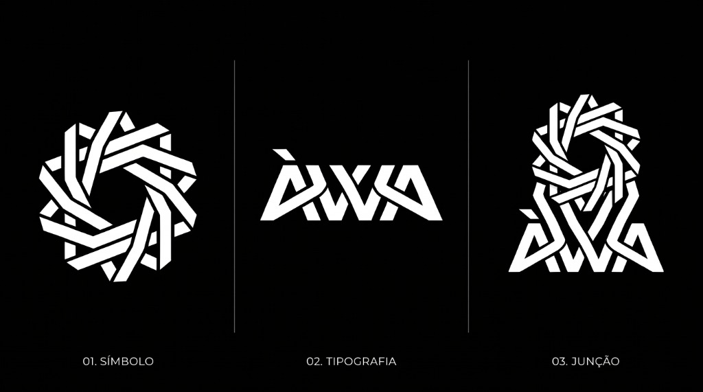

Aso Oke · Irun Didi · Obturador
Uma roda onde nenhum fio se sustenta sozinho
Nosso símbolo nasce da tecelagem tradicional Aso Oke e das tranças ancestrais Irun Didi — um Nó Infinito sem cercas externas. O centro vazado é simultaneamente a roda comunitária e o diafragma da lente por onde projetamos nossas histórias.
No set, recusamos hierarquias distantes: cada departamento veste a mesma assinatura monocromática em escala discreta no lado do coração, com sua função própria abaixo da marca.